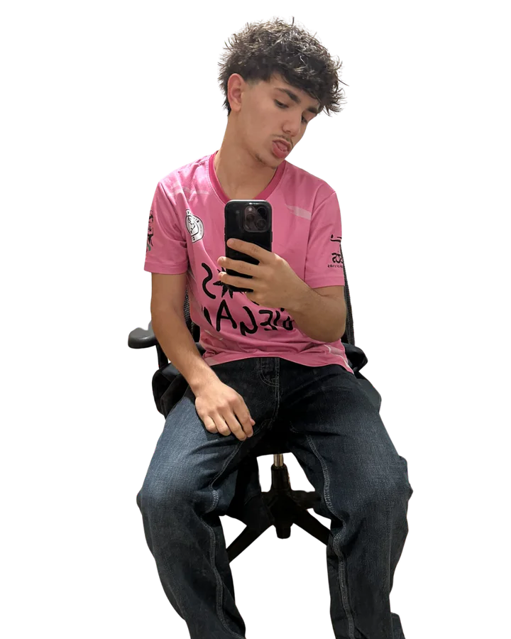
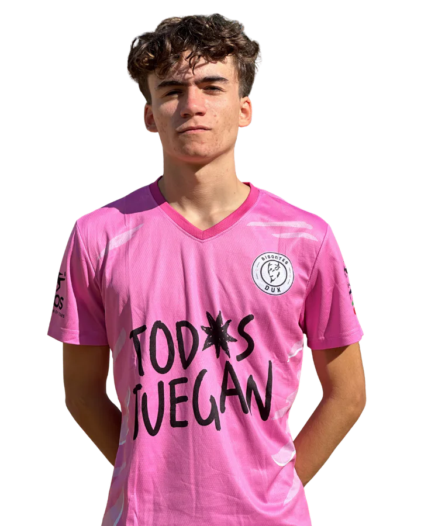
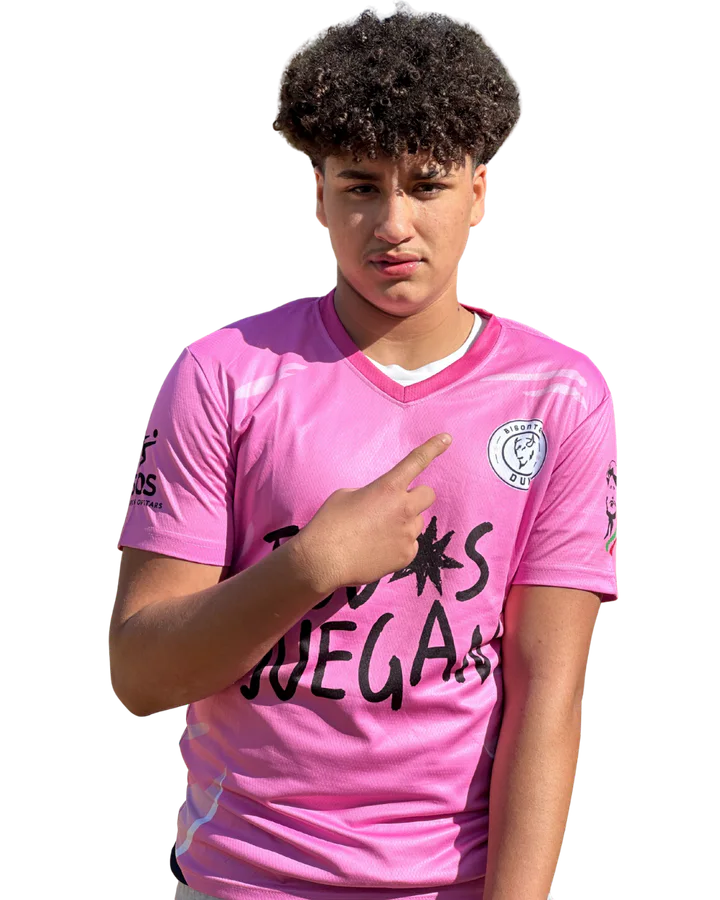
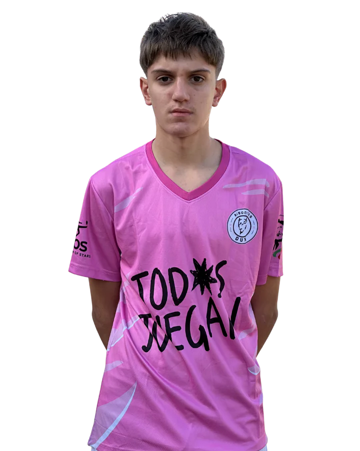
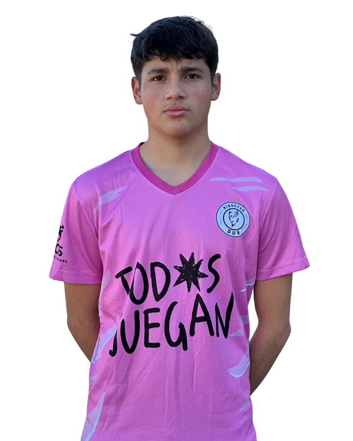

Bisontes DUX · Madrid
La Plantilla
Esta es la plantilla oficial de Bisontes DUX. Consulta la ficha individual de cada jugador y miembro del cuerpo técnico para conocer su dorsal y posición.
Jugadores y cuerpo técnico de Bisontes DUX
entrenador
Ben Gunduz
Ver ficha oficial →
segundo entrenador
Flavio Chicaiza
Ver ficha oficial →
portero
Alejandro Copa
Ver ficha oficial →
lateral izquierdo
Fabio Loi
Ver ficha oficial →
defensa central
Bruno Navas
Ver ficha oficial →
mediocentro
Miguel Arias
Ver ficha oficial →
lateral derecho
Ossama
Ver ficha oficial →
extremo izquierdo
Alan Gálvez
Ver ficha oficial →
extremo derecho
Eduardo Bebia
Ver ficha oficial →
delantero centro
Filip Tekiela
Ver ficha oficial →
extremo derecho
Luis Salas
Ver ficha oficial →
mediocentro ofensivo
Taiyang Arick
Ver ficha oficial →
extremo izquierdo
Arturo Constantine
Ver ficha oficial →
lateral derecho
Jeanca
Ver ficha oficial →
mediocentro ofensivo
Yacouba Diarra
Ver ficha oficial →
lateral izquierdo
Elías Naharro
Ver ficha oficial →
lateral derecho
Mario Comas
Ver ficha oficial →
delantero centro
Nicolás Chicaiza
Ver ficha oficial →
defensa central
Francisco Daza
Ver ficha oficial →
mediocentro ofensivo